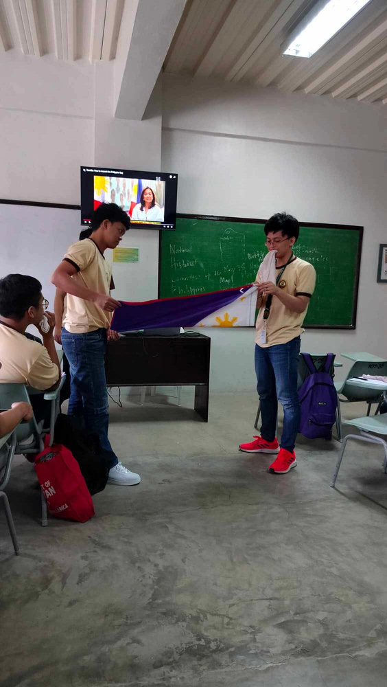
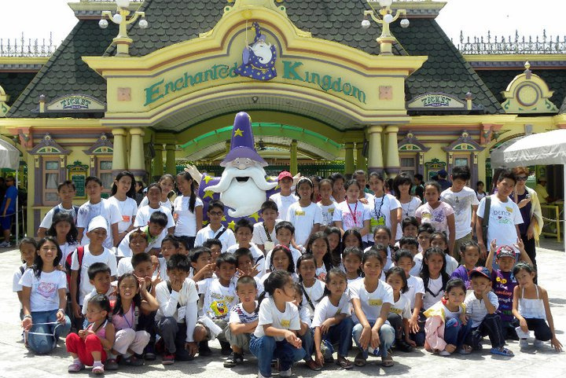
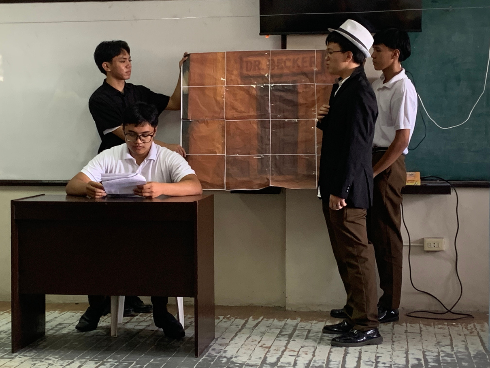
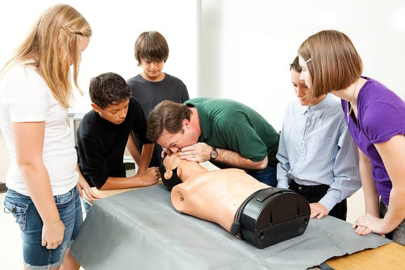
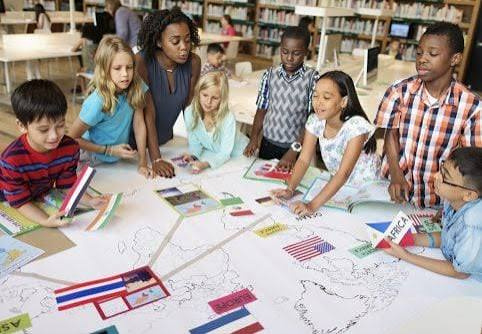
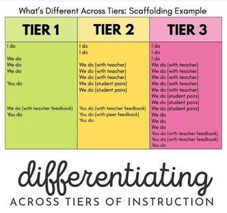
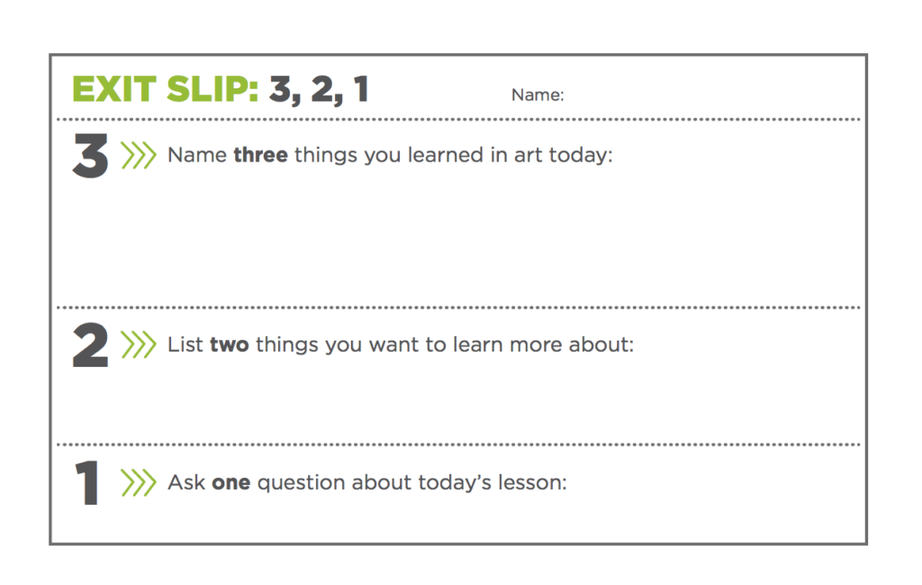

An interactive, modern guide exploring the core methods, techniques, instructional strategies, and educational devices that elevate learning outcomes in modern classrooms.
Structured methodologies teachers employ to deliver content, build skills, and facilitate real-world understanding.
An oral presentation by an expert designed to clarify information to a large group in a short period of time. Ideal for tackling specialized topics efficiently.
The teacher models a general principle using a concrete, real example first. Students then practice the exact skill based on what they observed.
A free, two-way exchange between teacher and students for exploring attitudes, interpretations, questions, and opinions rather than just rigid facts.
In-depth investigation of a single subject, group, organization, or event in its real-world context to analyze general principles and evaluate scenarios.

Method EStudents collaborate in pairs or small groups on application and analysis problems. Complements larger course structures to foster active peer learning.

Method FOut-of-the-classroom activity presenting concepts in realistic settings. Qualitative data collection in natural environments (e.g., Field Trips).
Recreating conditions using mathematical/virtual models to test behaviors and predict outcomes in safe controlled environments (e.g. Virtual Labs, Simulation Games).

Method HA dramatic approach where students enact learning episodes. Highly action-filled enactment through which participants depict real scenarios.
The specific steps, styles, or artistic execution teachers utilize to accomplish immediate learning objectives.
Stimulates critical thinking and checks knowledge retention through targeted questioning strategies.
Reinforces repetitive practice to convert emerging skills into permanent automatic habits.
Nurtures emotional connection, aesthetic appreciation, and positive student attitudes toward learning.
Why we teach this way: overarching methods, approaches, and frameworks that guide how content is introduced and mastered.
Direct instruction uses explicit, teacher-led instruction to introduce new skills and concepts. The teacher models the skill, explains thinking processes, and guides students through structured practice.

Tasks students with working together in teams to solve complex problems, develop creative ideas, and deepen understanding through meaningful dialogue.
Encourages students to actively explore ideas, formulate questions, conduct research, and discover answers independently.

Helps teachers meet diverse student learning needs by adjusting content, tasks, learning environments, or instructional delivery.

Ongoing checks for understanding used to inform immediate next steps in instruction and evaluate student mastery.

Teaching aids and visual tools used to facilitate instruction, capture imagination, and enhance comprehension.
Hooks student focus at the start of a lesson.
Fosters creative thinking and conceptualization.
Translates abstract theories into visual clarity.
Promotes active student engagement.
Enhances auditory and visual processing.
Physical teaching tools used in instruction.
Physical scale models representing real objects.
Modern technology tools and multimedia aids.
Test your understanding of Teaching Methods, Techniques, Strategies, and Devices!
A wise man is full of strength, and a man of knowledge enhances his might, for by wise guidance you can wage your war, and in abundance of counselors there is victory.